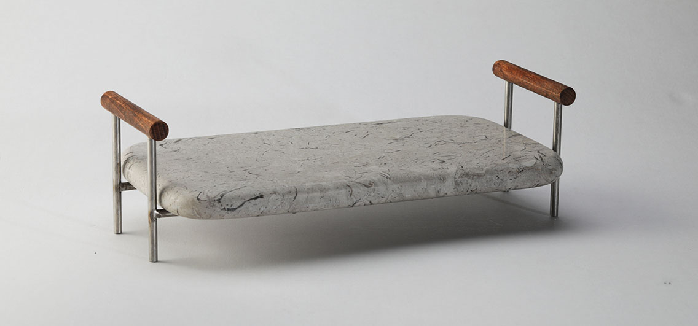

KRAŠKI KAMEN KRAŠKI KRUH

Kamnita pokrajina Krasa je skozi
zgodovino Kraševcem predstavljala kruh.
V preteklosti se je s to naravno dobrino
preživljala skoraj vsaka kraška družina
in tudi danes na Krasu živi tradicija
pridobivanja in obdelovanja kamna.
Kamen kot osnovna sestavina Krasa pa lahko
diha skupaj tudi s kruhom kot osnovnim živilom.
Ko na segret kamnit pladenj položimo kruh,
bo le ta zadišal in sprejel njegovo toplino.
Tako lahko kamen pritegne družino,
da si vzame čas za skupen jutranji zajtrk
ali pa preseneti goste, ki bodo pri obroku
postreženi s toplim kruhom.
Ob katerikoli priložnosti ponujen,
bo kruh postrežen na kosu zemlje,
ob dotiku kamna, pridobil
edinstven in prvinski priokus.
Suh kamnit pladenj vstavimo v hladno pečico, ki jo nastavimo na 200°C. Segrevamo ga 15-20 min na 200°C. Vroč pladenj z rokavico vzamemo iz pečice, ga položimo na podstavek in na njem postrežemo kruh.
Kamen zelo dobro akumulira toploto in ostane zelo vroč več kot 60 min, potem ko ga vzamemo iz pečice.
Pladenj je popolnoma naraven, brez zaščitnih premazov. Vroč pladenj je namenjen kruhu, ki s svojimi osnovnimi sestavinami kamnu ne škoduje. Maščoba na kamnu pušča madeže in kislina kamen razjeda, zato lahko tovrstna živila v posodi ali na krožniku položimo na segret pladenj in bodo tako ohranjala toploto.
Pladenj lahko za živila uporabljamo tudi ko ni segret ali pa nam služi kot dekorativni element.
Pladnji so ročno izdelani v Sloveniji.
Ščepec geologije
Kraški apnenec je sedimentna kamnina, ki je nastajala v globinah oceanskega dna, večinoma v obdobju krede pred 145 do 65 milijonov let. Pladnji so narejeni iz kamna, ki prihaja iz dveh kraških kamnolomov, kamnolom Lipica in kamnolom Povir. Lipica Unito je kamen homogene teksture, saj so ostanki karbonatnih skeletov živali - polžev, školjk, koral - enakomerno zdrobljeni. Kamen iz Povirja pa z ohranjenimi fosilnimi ostanki školjk tvori dinamično teksturo. Pladnji se razlikujejo, saj je vsak kos kamna unikaten in nosi svoj zapis.
Animacija
(Blender, Rhino)